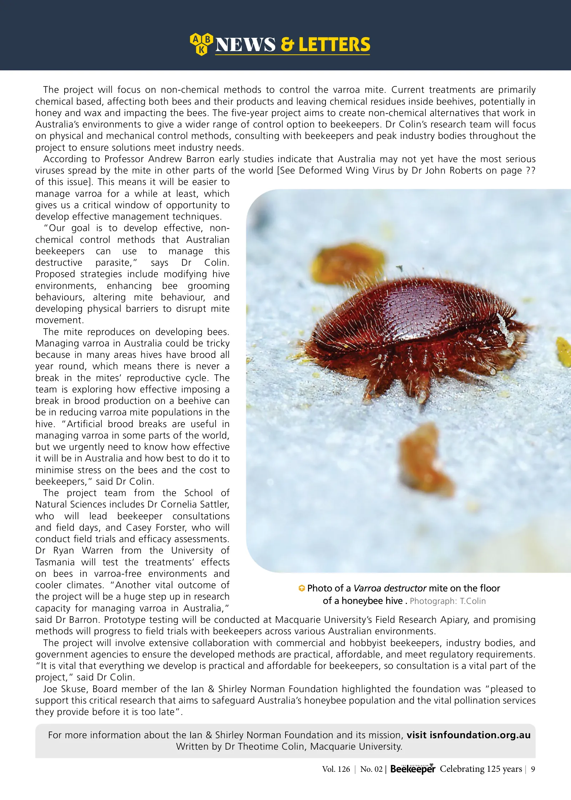

NEWS & LETTERS
The project will focus on non-chemical methods to control the varroa mite. Current treatments are primarily
chemical based, affecting both bees and their products and leaving chemical residues inside beehives, potentially in
honey and wax and impacting the bees. The five-year project aims to create non-chemical alternatives that work in
Australia’s environments to give a wider range of control option to beekeepers. Dr Colin’s research team will focus
on physical and mechanical control methods, consulting with beekeepers and peak industry bodies throughout the
project to ensure solutions meet industry needs.
According to Professor Andrew Barron early studies indicate that Australia may not yet have the most serious
viruses spread by the mite in other parts of the world [See Deformed Wing Virus by Dr John Roberts on page ??
of this issue]. This means it will be easier to
manage varroa for a while at least, which
gives us a critical window of opportunity to
develop effective management techniques.
“Our goal is to develop effective, non-
chemical control methods that Australian
beekeepers
can
use
to
manage
this
destructive
parasite,”
says
Dr
Colin.
Proposed strategies include modifying hive
environments, enhancing bee grooming
behaviours, altering mite behaviour, and
developing physical barriers to disrupt mite
movement.
The mite reproduces on developing bees.
Managing varroa in Australia could be tricky
because in many areas hives have brood all
year round, which means there is never a
break in the mites’ reproductive cycle. The
team is exploring how effective imposing a
break in brood production on a beehive can
be in reducing varroa mite populations in the
hive. “Artificial brood breaks are useful in
managing varroa in some parts of the world,
but we urgently need to know how effective
it will be in Australia and how best to do it to
minimise stress on the bees and the cost to
beekeepers,” said Dr Colin.
The project team from the School of
Natural Sciences includes Dr Cornelia Sattler,
who will lead beekeeper consultations
and field days, and Casey Forster, who will
conduct field trials and efficacy assessments.
Dr Ryan Warren from the University of
Tasmania will test the treatments’ effects
on bees in varroa-free environments and
cooler climates. “Another vital outcome of
the project will be a huge step up in research
capacity for managing varroa in Australia,”
said Dr Barron. Prototype testing will be conducted at Macquarie University’s Field Research Apiary, and promising
methods will progress to field trials with beekeepers across various Australian environments.
The project will involve extensive collaboration with commercial and hobbyist beekeepers, industry bodies, and
government agencies to ensure the developed methods are practical, affordable, and meet regulatory requirements.
“It is vital that everything we develop is practical and affordable for beekeepers, so consultation is a vital part of the
project,” said Dr Colin.
Joe Skuse, Board member of the Ian & Shirley Norman Foundation highlighted the foundation was “pleased to
support this critical research that aims to safeguard Australia’s honeybee population and the vital pollination services
they provide before it is too late”.
For more information about the Ian & Shirley Norman Foundation and its mission, visit isnfoundation.org.au
Written by Dr Theotime Colin, Macquarie University.
Photo of a Varroa destructor mite on the floor
of a honeybee hive . Photograph: T.Colin
Vol. 126 | No. 02 |
Celebrating 125 years | 9